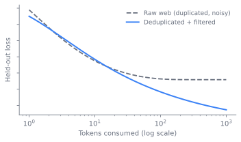

flowchart LR
A["Raw web<br/>CommonCrawl"] --> B["Extract +<br/>language ID"]
C["Curated /<br/>code / multilingual"] --> D["Clean +<br/>normalize"]
B --> D
D --> E["Dedup<br/>exact / fuzzy"]
E --> F["Quality filter<br/>heuristic + classifier"]
F --> G["Synthetic<br/>augmentation"]
G --> H["Mixture +<br/>curriculum"]
H --> I["Decontaminate<br/>vs eval registry"]
I --> J["Tokenize<br/>see sec-tokenization"]
J --> K[("Token-id shards")]
4 Data Curation and Quality
At fixed compute and architecture, the corpus is what separates a strong model from a mediocre one. By the end of this chapter a reader can explain where training data comes from, how raw web bytes become a clean deduplicated corpus, why mixture and curriculum are decided early and expensive to revisit, what synthetic data buys and risks, and why a contamination leak invalidates every downstream number.
4.1 A corpus is a system, not a script
A pre-training run consumes a fixed compute budget set by sec-scaling-laws. That budget buys a token count, and the corpus that fills it is the single biggest lever on final quality and the one least transferable from open recipes. The difficulty is that the failures here are silent. A duplicated shard, a filter that strips a dialect, a benchmark question that leaked through a synthetic-data step: none of these throw an error, and all of them surface only at evaluation, where they are expensive to diagnose and often impossible to undo without re-running. So the corpus must be built as a system whose every stage is auditable and whose hand-offs to the rest of the stack are explicit contracts.
Two of those hand-offs bind the rest of the book. The vocabulary is consumed by the architecture in sec-tokenization (this chapter treats the tokenizer only as a pointer; its design lives there). The decontamination report is consumed by evaluation in sec-benchmarks, which supplies the eval registry this chapter checks against.
A reader may wonder why this is not just a scripting problem. The reason is scale. Everything below runs at petabyte volume as distributed batch or stream jobs (Apache Spark, Ray, or custom MapReduce-style clusters) across large CPU fleets, separate from and ahead of the GPU training cluster. The hard parts are throughput, determinism, and resumability, not the per-document algorithms. A re-run must produce byte-identical shards, or the mixture and decontamination contracts become unverifiable.
The chapter follows a byte from the open web through the narrowing filters that decide whether it survives, then steps back to the three decisions that are locked early, the contract that protects the numbers, and the histories that explain why the field still argues about all of it.
4.2 A byte’s journey through the narrowing filters
The pipeline is a sequence of narrowing filters, each cheap relative to the training run it feeds, arranged so the cheapest cuts come first.
4.2.1 Where the byte comes from
The bulk substrate is the web. CommonCrawl is the raw input: WARC/WET extraction, boilerplate stripping, language identification, and URL/host-level filtering. CommonCrawl is raw and noisy, and the value is in the pipeline applied to it, not the crawl itself. Around that web core sit curated sources, books, papers, encyclopedic and reference text, source code with license and quality signals, and non-English text at deliberate ratios. Each source has different licensing, quality, and dedup characteristics, and each competes for the same token budget.
Before any filtering, the bytes are made uniform. Cleaning and normalization covers Unicode normalization, repair of text extraction artifacts, PII handling, and toxicity and safety pre-filtering. The goal is to remove garbage without scrubbing legitimate distributional variety: the registers, dialects, and domains that a model needs to see to generalize.
4.2.2 The first cut: deduplication
Deduplication runs three mechanisms at three granularities. Exact hashing removes identical documents. Suffix-array or substring methods remove near-duplicate spans inside otherwise distinct documents. MinHash with locality-sensitive hashing (LSH) does fuzzy document-level dedup at corpus scale: it estimates Jaccard similarity between documents from a small set of hashed shingles, so the cost is sub-quadratic rather than all-pairs. Dedup recovers wasted compute and reduces verbatim memorization. The standing tension is aggressiveness against losing genuinely distinct content.
Dedup is not merely a cost optimization, and the evidence says so. Lee et al. showed that deduplicating training data makes models better, not just cheaper: it cuts memorization and improves held-out loss (Lee et al. 2022). SemDeDup pushed the idea into embedding space, removing semantic near-duplicates that surface-form hashing misses (Abbas et al. 2023). The through-line is that redundancy is not neutral; it actively degrades the model, so the filter that removes it is a quality filter in disguise.
Figure fig-data-curation-minhash shows why MinHash with LSH avoids the all-pairs blow-up: each document collapses to a short signature, LSH bands route similar signatures into shared buckets, and a full Jaccard estimate is computed only for the few documents that already collide in a bucket.
Figure fig-04-data-curation-1 makes the cost argument quantitative. Naive all-pairs comparison grows as the square of the corpus size, which is hopeless at petabyte scale, while LSH keeps the candidate count close to linear by only ever comparing documents that already share a bucket.

flowchart LR
A["Document text"] --> B["Shingles<br/>(k-gram set)"]
B --> C["MinHash signature<br/>(num_perm hashes)"]
C --> D["Split into LSH bands"]
D --> E{"Shares a bucket<br/>with a kept doc?"}
E -->|No| F["Insert signature,<br/>keep document"]
E -->|Yes| G["Estimate Jaccard<br/>on bucket candidates"]
G --> H{"Above<br/>threshold?"}
H -->|No| F
H -->|Yes| I["Drop as near-duplicate,<br/>count in manifest"]
4.2.3 The second cut: quality filtering
What survives dedup still has to clear a quality bar, and two families set it. Heuristic gates are rule-based: length, symbol-to-word ratio, repetition, stop-word presence, and a perplexity threshold from a reference model. They are cheap, auditable, and high-recall for obvious junk, but brittle at the margins. Classifier filters are learned: a model scores each document against a reference of “good” text, for example a classifier trained to distinguish curated text from raw web. Classifiers have higher precision but carry a structural risk, they encode the reference set’s notion of quality into the entire corpus. The reference perplexity filter traces directly to CCNet, which paired language identification with a perplexity score from a reference language model (Wenzek et al. 2020).
4.3 The decisions locked early
By the time the byte clears quality filtering, the per-document work is done. What remains is global: how to combine sources, how to order them, and whether to manufacture more. These decisions are cheap to state and expensive to change, because each one constrains the others.
Mixture is the ratios across web, code, curated, and multilingual, plus per-source weights. It can be hand-tuned, scaled from small-proxy ablations, or optimized directly. DoReMi frames mixture selection as group distributionally robust optimization: train a small proxy, use it to find weights that minimize worst-case excess loss across domains, then apply those weights to the full run (Xie et al. 2023). The mixture is locked early and expensive to revisit, because changing it means re-deriving the curriculum and often re-running proxy ablations.
Curriculum is the ordering and phasing of data over training: easy-to-hard, domain phasing, or saving a high-quality slice for late. This is the ordering within the data plane. It is distinct from the annealing phase, which up-weights high-quality data near the end of training and belongs to mid-training, covered alongside sec-training-at-scale.
Synthetic data is model-generated and templated text: rephrasing or augmenting web text, textbook-style generation, and distillation targets. The principle is that a small amount of dense, clean, on-distribution text can be worth far more than its token count in raw web. It is powerful for filling capability gaps, and sec-synthetic-data treats it as a first-class post-training tool. The risks are distributional collapse, factual drift, and laundering eval content back into training. Because the last risk feeds directly into the contract that follows, synthetic data is also where the pipeline most needs the next stage to be strict.
4.4 Decontamination as a contract
Decontamination is N-gram or substring overlap detection against the eval registry, an overlap threshold, a drop-or-flag decision, and a report emitted as the contract to evaluation. This is the stage that earns the chapter its place in the stack. The report, not a shared implementation, is the hand-off.
The threshold is not a free parameter. N-gram overlap detection is itself evadable: rephrased benchmark samples slip past surface-level matching, which is exactly why the threshold and method are a negotiated contract rather than a private default (Yang et al. 2023). A loose threshold leaks benchmarks and inflates scores. A strict one over-removes legitimate near-duplicates and shrinks the corpus. Either way the decision belongs to the boundary between this chapter and sec-benchmarks, not inside the data team.
TipConstraint arrow
The evaluation layer reaches down and sets a hard constraint on this one. The decontamination threshold is not a data-team preference: it is dictated by the eval registry that sec-benchmarks defines and must supply. If evaluation does not hand down which held-out sets to protect, this chapter cannot guarantee the numbers reported later are real. The worst-case failure, a contamination leak through a dedup gap, a synthetic pipeline, or an agent transcript that embedded a benchmark task, inflates every downstream score at once. The decontamination contract exists precisely so a lower layer cannot silently corrupt an upper one.
4.5 How the recipe got here: two histories
4.5.1 From assembled corpora to pipeline-as-product
Early corpora were assembled, not engineered. The Pile curated 800GB from twenty-two diverse sources and made the components explicit (Gao et al. 2020). C4, built for T5, showed that a handful of heuristic cleaning rules over CommonCrawl already moved downstream quality (Raffel et al. 2020). The pivot to pipeline-as-product came with CCNet, which combined language identification with a perplexity filter from a reference language model (Wenzek et al. 2020), and then with RefinedWeb, whose claim was sharper: web data alone, filtered and deduplicated hard enough, can match or beat curated corpora (Penedo et al. 2023). FineWeb carried this further with public ablations that fixed compute and architecture and varied only the data, turning corpus construction into a measurable science rather than folklore (Penedo et al. 2024).
4.5.2 The synthetic turn
The synthetic turn arrived through two results. TinyStories showed that a narrow, fully synthetic corpus could teach small models coherent English (Eldan and Li 2023). The phi line, opened by “Textbooks Are All You Need,” argued that textbook-quality synthetic and filtered data could reach strong reasoning at a fraction of the usual token count (Gunasekar et al. 2023). Rephrasing the Web (WRAP) made the cheaper version of the bet: rephrase existing web text into cleaner styles rather than generating from scratch, gaining compute and data efficiency without inventing content (Maini et al. 2024). The newest and least-documented source is agent transcripts, tool-use traces and verified multi-step trajectories recycled as training signal, foreshadowed by datasets like ToolBench (Qin et al. 2023). The open questions there are provenance, dedup against the source model’s own outputs, and contamination from embedded eval tasks.
ImportantWhat’s contested
Whether to chase scale or quality is not settled. One camp, traced through RefinedWeb and FineWeb, holds that aggressively filtered and deduplicated web data is sufficient and that curated corpora add little once filtering is good enough. The other, traced through the phi line, holds that synthetic textbook-quality data is worth a large multiple of its token count and that the future of the corpus is generated, not crawled. The disagreement is live because the two positions imply different infrastructure, different cost structures, and different contamination risks, and because synthetic-heavy recipes are the hardest to evaluate cleanly: the same models that generate the data also sit near the benchmarks. Treat the synthetic share as a bet on diversity versus control, not a solved ratio.
Figure fig-data-curation-debate traces why the choice is structural, not a single tunable ratio: each camp branches into a different stack, cost structure, and contamination risk.
4.6 What you trade, and what breaks
Every stage above is a dial, and turning it the wrong way fails silently. The dials are worth naming together because they interact.
- Quantity versus quality. More tokens help only if they are not junk or duplicates. Past a point, aggressive filtering and dedup beat raw volume, as sketched in Figure fig-04-data-curation-2: held-out loss on raw web flattens once added tokens mostly repeat content the model has already seen, while the same compute on deduplicated and filtered tokens keeps falling. The hard part is knowing where that point is for a given compute budget, and that point moves with the budget set in sec-scaling-laws.

- Dedup aggressiveness. Stronger fuzzy dedup removes memorization risk and wasted compute, but can delete legitimately rare-but-distinct content. The threshold is a recall-precision dial with no universally right setting. - Heuristic versus classifier filtering. Heuristics are cheap, auditable, and bias-light but coarse. Classifiers are precise but import the biases of their reference set into the entire corpus, stripping registers, dialects, or domains wholesale. - Synthetic share. Synthetic data fills gaps cheaply but risks collapse, factual drift, and eval laundering. The ratio trades diversity against control. - Decontamination strictness. A loose threshold leaks benchmarks and inflates scores. A strict one over-removes legitimate near-duplicates and shrinks the corpus. The threshold is a contract term, not an internal detail.The failure modes are worth naming because each bites at a different time. A contamination leak inflates results and is detected late, if at all. A dedup gap wastes compute and raises memorization risk, while over-dedup silently removes rare content. Filter bias amplification strips legitimate variety across the whole corpus. Synthetic collapse or drift narrows the distribution or propagates the generator’s errors. A mixture mistake under- or over-trains a capability, and because the mixture is locked early and surfaces only at evaluation, it is the costliest to diagnose and redo.
4.7 The determinism discipline
Most of this chapter is a set of design decisions. The operational reality is a determinism discipline. Because mixture and decontamination are contracts, every stage must be reproducible to the byte. In practice that means content-addressed inputs, pinned filter thresholds and model versions, and a manifest that records, for each output shard, the exact transforms that produced it. A representative dedup step is fuzzy document matching by MinHash and LSH, sketched here against its method rather than any one codebase:
# Fuzzy dedup: bucket by LSH, then drop near-duplicates within a bucket.
def dedup(docs, threshold=0.8, num_perm=128):
seen = LSHIndex(threshold=threshold, num_perm=num_perm)
for doc in docs:
sig = minhash(shingles(doc.text), num_perm=num_perm)
if not seen.query(sig): # no near-duplicate already kept
seen.insert(doc.id, sig)
yield doc # else: drop, counted in the manifestThe decontamination step is the same shape with a different index: build n-gram signatures for every item in the eval registry, then drop or flag any training document whose overlap exceeds the contract threshold, and write the count and identities of removed documents into the report that evaluation consumes.
4.8 Further reading
- Penedo et al., “The FineWeb Datasets,” 2024. arXiv:2406.17557
- Penedo et al., “The RefinedWeb Dataset for Falcon LLM,” 2023. arXiv:2306.01116
- Wenzek et al., “CCNet: Extracting High Quality Monolingual Datasets from Web Crawl Data,” 2020 (LREC). ACL Anthology
- Lee et al., “Deduplicating Training Data Makes Language Models Better,” 2022 (ACL). ACL Anthology
- Abbas et al., “SemDeDup: Data-efficient learning at web-scale through semantic deduplication,” 2023. arXiv:2303.09540
- Xie et al., “DoReMi: Optimizing Data Mixtures Speeds Up Language Model Pretraining,” 2023 (NeurIPS). OpenReview
- Gao et al., “The Pile: An 800GB Dataset of Diverse Text for Language Modeling,” 2020. arXiv:2101.00027
- Raffel et al., “Exploring the Limits of Transfer Learning with a Unified Text-to-Text Transformer” (T5 / C4), 2020 (JMLR). JMLR
- Soldaini et al., “Dolma: an Open Corpus of Three Trillion Tokens for Language Model Pretraining Research,” 2024 (ACL). ACL Anthology
- Gunasekar et al., “Textbooks Are All You Need” (phi-1), 2023. arXiv:2306.11644
- Eldan & Li, “TinyStories: How Small Can Language Models Be and Still Speak Coherent English?,” 2023. arXiv:2305.07759
- Maini et al., “Rephrasing the Web: A Recipe for Compute and Data-Efficient Language Modeling” (WRAP), 2024. arXiv:2401.16380
- Yang et al., “Rethinking Benchmark and Contamination for Language Models with Rephrased Samples” (LLM decontaminator; on n-gram overlap thresholds and their limits), 2023. arXiv:2311.04850
- Qin et al., “ToolLLM: Facilitating Large Language Models to Master 16000+ Real-world APIs” (ToolBench tool-use trajectories as training data), 2023. arXiv:2307.16789
Abbas, Amro, Kushal Tirumala, Dániel Simig, Surya Ganguli, and Ari S. Morcos. 2023. SemDeDup: Data-Efficient Learning at Web-Scale Through Semantic Deduplication. https://arxiv.org/abs/2303.09540.
Eldan, Ronen, and Yuanzhi Li. 2023. TinyStories: How Small Can Language Models Be and Still Speak Coherent English? https://arxiv.org/abs/2305.07759.
Gao, Leo, Stella Biderman, Sid Black, et al. 2020. The Pile: An 800GB Dataset of Diverse Text for Language Modeling. https://arxiv.org/abs/2101.00027.
Gunasekar, Suriya, Yi Zhang, Jyoti Aneja, et al. 2023. Textbooks Are All You Need. https://arxiv.org/abs/2306.11644.
Lee, Katherine, Daphne Ippolito, Andrew Nystrom, et al. 2022. “Deduplicating Training Data Makes Language Models Better.” Proceedings of the 60th Annual Meeting of the Association for Computational Linguistics (ACL). https://aclanthology.org/2022.acl-long.577/.
Maini, Pratyush, Skyler Seto, He Bai, David Grangier, Yizhe Zhang, and Navdeep Jaitly. 2024. Rephrasing the Web: A Recipe for Compute and Data-Efficient Language Modeling. https://arxiv.org/abs/2401.16380.
Penedo, Guilherme, Hynek Kydlíček, Loubna Ben Allal, et al. 2024. The FineWeb Datasets: Decanting the Web for the Finest Text Data at Scale. https://arxiv.org/abs/2406.17557.
Penedo, Guilherme, Quentin Malartic, Daniel Hesslow, et al. 2023. The RefinedWeb Dataset for Falcon LLM: Outperforming Curated Corpora with Web Data, and Web Data Only. https://arxiv.org/abs/2306.01116.
Qin, Yujia, Shihao Liang, Yining Ye, et al. 2023. ToolLLM: Facilitating Large Language Models to Master 16000+ Real-World APIs. https://arxiv.org/abs/2307.16789.
Raffel, Colin, Noam Shazeer, Adam Roberts, et al. 2020. “Exploring the Limits of Transfer Learning with a Unified Text-to-Text Transformer.” Journal of Machine Learning Research 21 (140): 1–67. https://www.jmlr.org/papers/v21/20-074.html.
Wenzek, Guillaume, Marie-Anne Lachaux, Alexis Conneau, et al. 2020. “CCNet: Extracting High Quality Monolingual Datasets from Web Crawl Data.” Proceedings of the Twelfth Language Resources and Evaluation Conference (LREC). https://aclanthology.org/2020.lrec-1.494/.
Xie, Sang Michael, Hieu Pham, Xuanyi Dong, et al. 2023. “DoReMi: Optimizing Data Mixtures Speeds up Language Model Pretraining.” Advances in Neural Information Processing Systems (NeurIPS). https://openreview.net/forum?id=lXuByUeHhd.
Yang, Shuo, Wei-Lin Chiang, Lianmin Zheng, Joseph E. Gonzalez, and Ion Stoica. 2023. Rethinking Benchmark and Contamination for Language Models with Rephrased Samples. https://arxiv.org/abs/2311.04850.